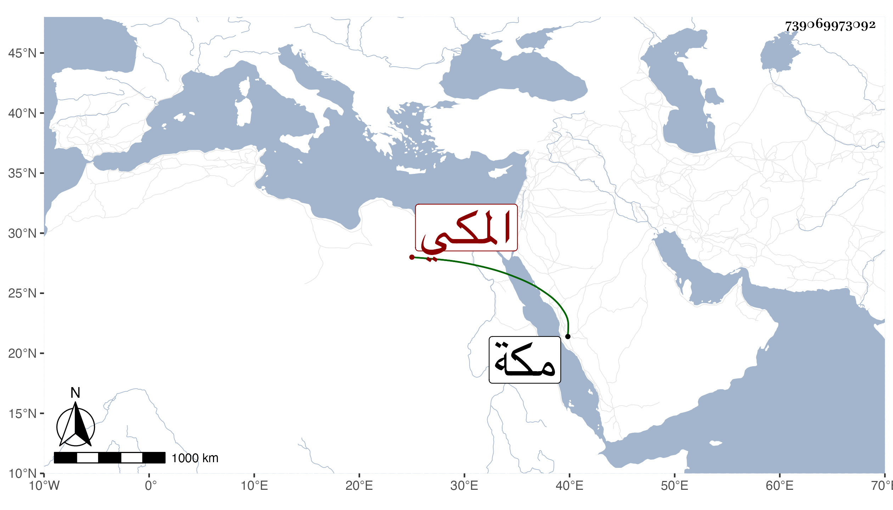

0902Sakhawi.DawLamic.ITO20230111-ara1.EIS1600.739069973092
Biography ID: 739069973092
1043
محمد بن القاضي المحب أحمد بن عبد الحي القيوم بن أبي بكر بن عبد الله بن ظهيرة المكي الماضي أبوه . ولد في إحدى الجماديين سنة تسع وستين بمكة ونشأ بها في كنف أبويه وأمه كمالية ابنة عبد الرحمن أخت عبد الكريم وهما ابنا عم أبيه فحفظ القرآن وغيره واشتغل قليلا عند إسماعيل بن أبي يزيد وسمع مني بمكة في المجاورة الثالثة بل لازمني في المجاورة بعدها حتى سمع جملة كتبت له كراسة ، وهو ذكي متأدب لطيف في أقرانه .
